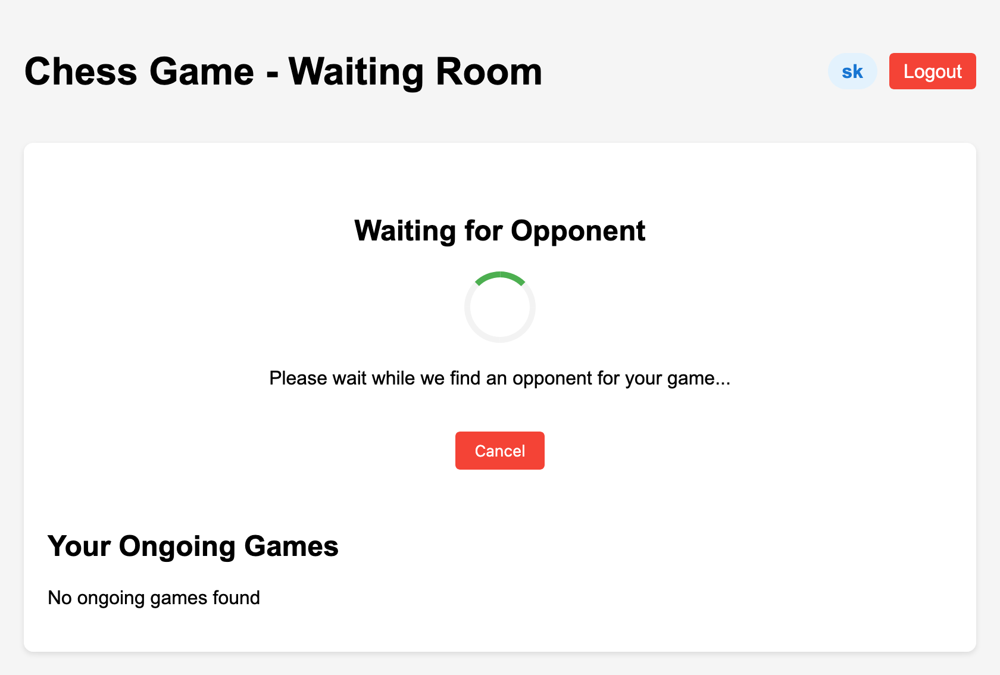
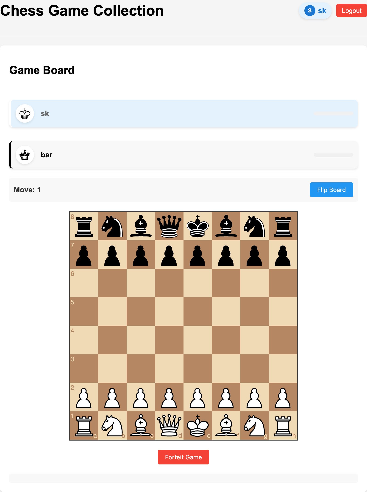
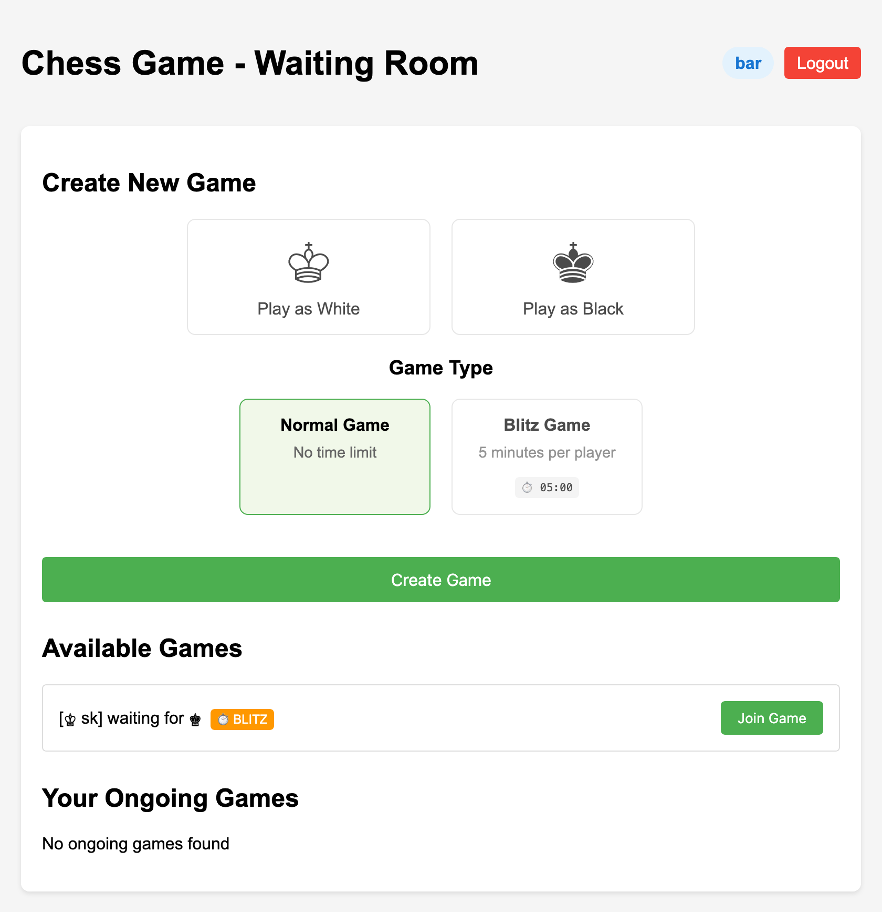
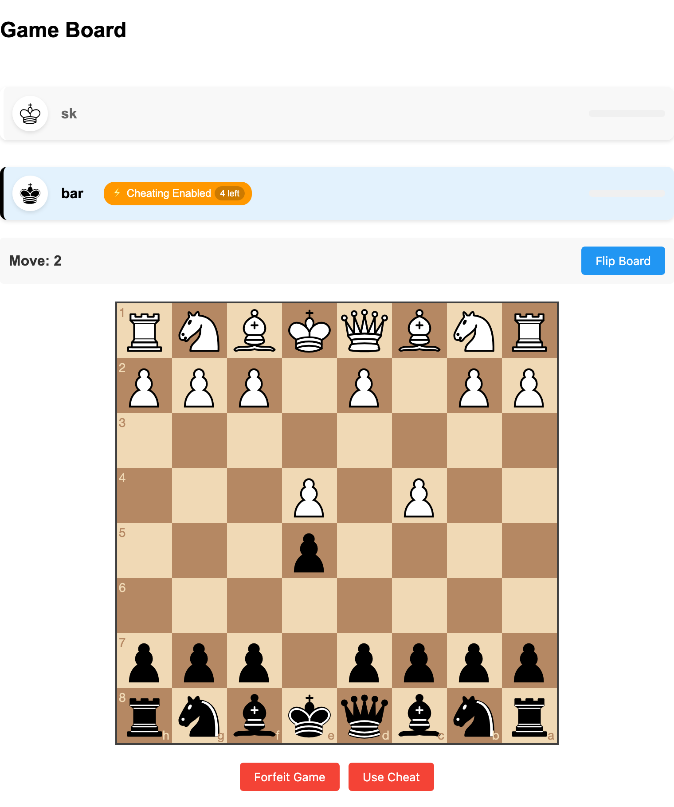
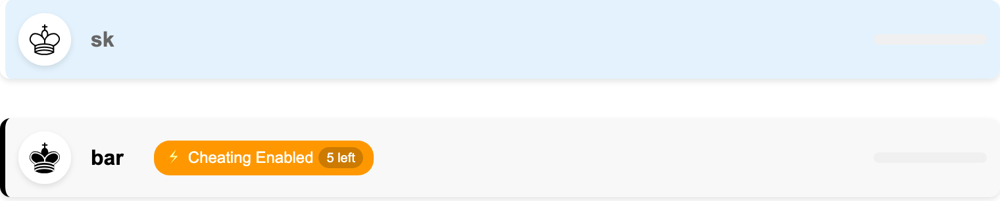

Chess Tournament Preparation Guide
How to play Chess?
If you're new to chess or need a refresher, here's a complete tutorial video to get you started:
For additional learning resources, you can also check out this comprehensive tutorial:
Chess.com TutorialWhy are we doing this?
We are working to create a benchmark for detecting cheaters in chess. This is an important problem in the chess community.
Cheaters pose a serious problem in the chess community, and detecting them is challenging because cheaters often mix computer-recommended moves with their own moves to avoid detection.
Important: We are creating a dataset that includes both normal players and players with limited cheating attempts. This data will be used to improve cheat detection algorithms in chess.
How to Participate
Access the Chess Platform
Visit our chess platform at the following URL:
Chess PlatformChoose Your Game Mode
You can participate in two different game modes:
- Normal Chess Game: Take as much time as you need to make each move
- Blitz Chess Game: Limited to 5 minutes total for all your moves. You lose if you use up all your time!
Start or Join a Game
You can either create a new game or join an existing one:
Option A: Create a new game and wait for opponents
You'll wait briefly until an opponent is found
When a match is found, your game will start immediately
Option B: Join an existing game
Browse the list of available games and select one based on game mode and side preference
Playing the Game
During the tournament, you may be randomly assigned one of two roles:
If you're assigned as a cheater:
You'll have only 5 chances to use cheat moves, so use them wisely. When you press "Use Cheat," an AI will automatically make the best move for you. These cheat moves are generated by a chess engine that plays better than any human.
If you're playing as a normal player:
Simply play as you normally would. Your opponent won't know whether you're a cheater or not.

The game will progress normally with players taking turns:
Important: For the purpose of data collection, please try to complete your games rather than forfeiting. Each completed game provides valuable data for our research.
Continuous Participation
After a game is complete, you're welcome to create or join new games. Your active participation is extremely valuable for our dataset collection!
Thank you: Your participation helps advance our research in chess cheat detection, which benefits the entire chess community.